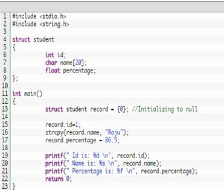

Structures
C Structure is a collection of different data types which are grouped together and each element in a C structure is called member.
C arrays allow you to define type of variables that can hold several data items of the same kind but
structure is another user defined data type available in C programming, which allows you to
combine data items of different kinds.
If you want to access structure members in C, structure variable should be declared.
Many structure variables can be declared for same structure and memory will be allocated for each separately.
It is a best practice to initialize a structure to null while declaring, if we don’t assign any values to structure members.
Difference between C variable, C array and C structure:
A normal C variable can hold only one data of one data type at a time.
An array can hold group of data of same data type.
A structure can hold group of data of different data types
Data types can be int, char, float, double and long double etc.
Example program for C structure:
This program is used to store and access “id, name and percentage” for one student. We can also store and access these data for many students using array of structures. 
Id is: 1
Name is: Raju
Percentage is: 86.500000
Output:
Uses of C structures:
C Structures can be used to store huge data. Structures act as a database.
C Structures can be used to send data to the printer.
C Structures can interact with keyboard and mouse to store the data.
C Structures can be used in drawing and floppy formatting.
C Structures can be used to clear output screen contents.
C Structures can be used to check computer’s memory size etc.